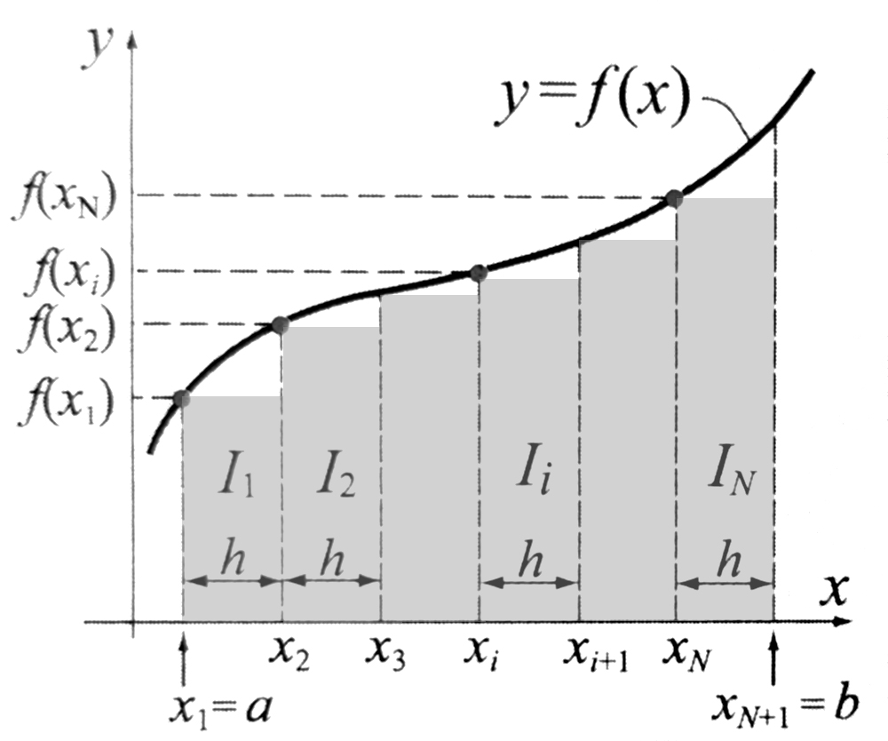

4.Całki
I. Funkcja Pierwotna i całka nieoznaczona¶
Funkcja pierwotna (antypochodna) \(F(x)\) dla danej funkcji \(f(x)\) to funkcja, której pochodna jest równa funkcji \(f(x)\), czyli \(F'(x)=f(x)\) dla każdego \(x\) z danego przedziału. Jest to działanie odwrotne do różniczkowania; proces znajdowania funkcji pierwotnej nazywamy całkowaniem. Jeśli funkcja \(f(x)\) ma jedną funkcję pierwotną \(F(x)\), to ma ich nieskończenie wiele, które różnią się o stałą, np. \(F(x)+C\), gdzie \(C\) jest dowolną stałą.
Intuicja Symbolu \(\int\)
Symbol całki to stylizowana litera "S", od łacińskiego słowa summa. Wprowadził go Gottfried Leibniz, aby podkreślić, że całka to suma nieskończenie wielu, nieskończenie małych elementów.
- \(f(x)\): funkcja podcałkowa (nasz "przepis" na wysokość).
- \(dx\): różniczka (nasz nieskończenie mały "krok" na osi X).
Dlaczego zawsze dodajemy stałą \(C\)?
To kluczowe! Pochodna z każdej stałej (liczby) wynosi \(0\).
- \((x^2 + 5)' = 2x\)
- \((x^2 - 100)' = 2x\)
Ponieważ różniczkowanie "zabija" stałą, całka musi ją "przywrócić" jako \(+ C\), ponieważ nie wiemy, jaka liczba tam stała.
Tabela podstawowych całek¶
| Funkcja \(f(x)\) | Całka nieoznaczona \(\int f(x)dx\) | Pochodna wyniku (sprawdzenie) |
|---|---|---|
| \(a\) (stała) | \(ax+C\) | \((ax+C)'=a\) |
| \(x^n\) (dla \(n \neq -1\)) | \(\frac{x^{n+1}}{n+1}+C\) | \(\left(\frac{x^{n+1}}{n+1}+C\right)'=x^n\) |
| \(\frac{1}{x}\) | \(\ln(x) + C\) | \((\ln(x) + C)' = \frac{1}{x}\) |
| \(e^x\) | \(e^x+C\) | \((e^x+C)'=e^x\) |
| \(\cos(x)\) | \(\sin(x)+C\) | \((\sin(x)+C)'=\cos(x)\) |
| \(\sin(x)\) | \(-\cos(x)+C\) | \((-\cos(x)+C)'=\sin(x)\) |
Zadanie: Obliczanie całki nieoznaczonej¶
Oblicz \(\int 2x \, dx\)
Krok 1: Wyciągnięcie stałej przed całkę W całkach (podobnie jak w pochodnych) liczby, przez które mnożymy funkcję, możemy wyciągnąć "przed nawias".
Krok 2: Zastosowanie wzoru na potęgę Używamy wzoru z tabeli: \(\int x^n \, dx = \frac{x^{n+1}}{n+1} + C\). U nas \(n = 1\), więc:
Otrzymujemy:
Krok 3: Uproszczenie wyniku Zauważ, że dwójka w liczniku i dwójka w mianowniku się skracają:
Sprawdzenie (Pochodna)
Aby mieć 100% pewności, policzmy pochodną z naszego wyniku:
Przykłady :
-
\(\int 3x^2 \, dx\):
Wyciągamy stałą: \(3 \cdot \int x^2 \, dx\)
Zwiększamy potęgę o 1 (\(2+1=3\)) i dzielimy przez 3: \(3 \cdot \frac{x^3}{3} + C\)
Wynik: \(x^3 + C\)
-
\(\int 5 \, dx\):
Traktujemy to jako \(5 \cdot x^0\). Wynik to stała razy \(x\).
Wynik: \(5x + C\)
II. Całka Oznaczona i Sumy Riemanna¶
Suma Riemanna: Fundament Pola Powierzchni¶
Zanim powstały wzory, pole pod krzywą przybliżano prostokątami.
- Dzielimy obszar na pionowe paski o szerokości \(\Delta x\).
- Wysokość każdego paska to wartość funkcji \(f(x)\).
- Suma Riemanna to suma pól tych prostokątów.

Jeśli zwiększymy liczbę prostokątów do nieskończoności (szerokość \(\Delta x \to 0\)), błąd przybliżenia znika, a suma zamienia się w całkę oznaczoną.
Wzór Newtona-Leibniza¶
To pomost między funkcją pierwotną a polem. Wcześniej nauczyliśmy się szukać funkcji pierwotnej \(F(x)\) (całka nieoznaczona). Przed chwilą powiedzieliśmy, że całka oznaczona to pole pod wykresem. Jak to połączyć?
Robi to wzór Newtona-Leibniza:
O co w tym chodzi?¶
Zamiast bawić się w nieskończone sumowanie prostokątów (sumy Riemanna), wystarczy:
- Znaleźć funkcję pierwotną \(F(x)\) (tak jak w Temacie 1).
- Podstawić do niej górną granicę całkowania (\(b\)).
- Podstawić dolną granicę (\(a\)).
- Odjąć te dwa wyniki od siebie.
Ważna uwaga techniczna: Przy obliczaniu całki oznaczonej stała \(C\) nam znika, ponieważ \((F(b) + C) - (F(a) + C) = F(b) - F(a)\). Więc tutaj o \(C\) nie musisz się martwić.
Przykład: Pole pod wykresem¶
Obliczymy pole pod wykresem funkcji \(f(x) = 2x\) na przedziale od \(x = 0\) do \(x = 3\).
Krok 1: Zapisanie całki oznaczonej
Chcemy obliczyć:
Krok 2: Znalezienie funkcji pierwotnej
Z Tematu 1 wiemy już, że funkcją pierwotną dla \(2x\) jest \(x^2\). W całkach oznaczonych zapisujemy to w specjalnym nawiasie z granicami:
Krok 3: Zastosowanie wzoru Newtona-Leibniza
Podstawiamy najpierw górną granicę (\(3\)), a potem dolną (\(0\)) i odejmujemy wyniki:
Krok 4: Sprawdzenie geometryczne (czy to ma sens?)
Narysujmy to sobie w wyobraźni (lub spójrz na opis poniżej):
- Funkcja \(f(x) = 2x\) to linia prosta przechodząca przez środek układu współrzędnych.
- Na przedziale od \(0\) do \(3\), obszar pod tą linią tworzy trójkąt prostokątny.
- Podstawa (\(b\)): wynosi \(3\) (od \(0\) do \(3\)).
- Wysokość (\(h\)): to wartość funkcji w punkcie \(x=3\), czyli \(f(3) = 2 \cdot 3 = 6\).
Teraz użyjmy wzoru na pole trójkąta z podstawówki:
Wynik jest identyczny! Całka poprawnie obliczyła pole powierzchni.
III. Metody Całkowania (Zaawansowane Strategie)¶
A. Metoda przez podstawienie (Metoda "t")¶
Odwraca "regułę łańcuchową". Stosujemy ją, gdy widzimy funkcję i jej pochodną.
Algorytm postępowania:¶
- Analiza: Poszukaj fragmentu, który "psuje" prostotę całki (np. to, co jest pod pierwiastkiem, w potędze lub w nawiasie). Sprawdź, czy jego pochodna stoi obok.
- Podstawienie: Wybrany fragment nazywamy nową zmienną \(t\). Cel: zamienić skomplikowany zapis na jedną literę.
- Różniczkowanie (Kluczowy krok): Musimy wiedzieć, jak szybko zmienia się \(t\) względem \(x\). Liczymy pochodną i dopisujemy \(dx\) oraz \(dt\). Komentarz: Bez tego kroku nie możemy legalnie zamienić symbolu całowania.
- Podmiana: Wstawiamy \(t\) i \(dt\) w odpowiednie miejsca. Komentarz: Jeśli po tym kroku w całce nadal masz jakieś \(x\), to znaczy, że albo podstawienie było złe, albo musisz jeszcze coś przekształcić.
- Całkowanie: Teraz liczysz całkę z tablicy (np. \(\int e^t, \int t^n\)).
- Powrót: Pamiętaj, że wynik musi być w tych samych "jednostkach" co pytanie. Zamień \(t\) z powrotem na wyrażenie z \(x\).
Przykład rozwiązania A¶
Krok 1 (Wybór): Widzimy \(x^2\) w potędze. Pochodna z \(x^2\) to \(2x\). Mamy \(x\) przed \(e\), więc pasuje idealnie!
Krok 2 i 3 (Zapis pomocniczy):
Krok 4 (Podmiana):
Krok 5 (Obliczenie): Wyciągamy \(\frac{1}{2}\) przed całkę. Całka z \(e^t\) to po prostu \(e^t\).
Krok 6 (Powrót): Podstawiamy \(x^2\) za \(t\).
Przykład 1: \(\int 2x \cos(x^2) \, dx\) Podstawiamy \(t = x^2\), bo obok stoi pochodna \(2x\). Zapis "w kreskach":
Przykład 2: \(\int \frac{\ln(x)}{x} \, dx\) Pochodna \(\ln(x)\) to \(\frac{1}{x}\).
B. Metoda przez części¶
Stosujemy ją, gdy mamy iloczyn dwóch funkcji różnych "gatunków". Odwraca "pochodną iloczynu". Wzór:
Algorytm postępowania :¶
- Wybór \(u\) oraz \(dv\):
- \(u\): to funkcja, którą chcemy "zniszczyć" pochodną (np. wielomian \(x\) zmieni się w \(1\)).
- \(dv\): to funkcja, której "nie boimy się" całkować (np. \(e^x\) lub \(\sin x\) po całce nadal są łatwe).
- Komentarz: Wyjątkiem jest \(\ln x\) – on zawsze musi być \(u\), bo nie umiemy go łatwo scałkować na początku.
- Obliczenia pomocnicze: Z \(u\) robisz pochodną (\(du\)), a z \(dv\) robisz całkę (\(v\)).
- Podstawienie do wzoru: Składamy "puzzle" według wzoru. Komentarz: Uważaj na znaki, zwłaszcza jeśli w wyniku całowania \(dv\) pojawił się minus!
- Finał: Liczysz ostatnią całkę. Jeśli wybrałeś \(u\) i \(dv\) poprawnie, ta całka będzie prostsza od wyjściowej.
Przykład rozwiązania B¶
Krok 1 i 2 (Wybór i pomocnicze):
Krok 3 (Zastosowanie wzoru):
Krok 4 (Uproszczenie i wynik):
Komentarz: Pod całką \(x^2\) skraca się z \(x\), zostaje samo \(x\).
Przykład 2: \(\int x \cos(x) \, dx\)
Uproszczamy wielomian wybierając \(u = x\).
Przykład 3 (Trik z jedynką): \(\int \ln(x) \, dx\)
Dopisujemy "niewidzialną" jedynkę: \(\int 1 \cdot \ln(x) \, dx\).
Przykład 4 (Podwójne części): \(\int x^2 e^x \, dx\)
Musimy scałkować dwa razy, by "zbić" \(x^2\) do stałej.
- Po pierwszym razie: \(x^2 e^x - \int 2x e^x \, dx\)
- Dla \(\int 2x e^x dx\) robimy części jeszcze raz.
- Wynik: \(x^2 e^x - 2x e^x + 2e^x + C\)
IV. Zastosowania¶
1. Objętość bryły obrotowej (Oś OX)¶
Gdy obracamy wykres funkcji \(f(x)\) wokół osi \(OX\), tworzymy bryłę. Możemy ją sobie wyobrazić jako stos nieskończenie wielu, nieskończenie cienkich plasterków (tarczy). Każdy taki plasterek jest walcem o:

- Promieniu: \(r = f(x)\)
-
Wysokości: \(h = dx\) (nieskończenie mała zmiana argumentu \(x\))
-
Pole powierzchni koła (podstawy plasterka) to \(P = \pi \cdot r^2 = \pi \cdot [f(x)]^2\).
-
Objętość jednego plasterka to \(dV = \pi \cdot [f(x)]^2 dx\).
-
Sumując te objętości za pomocą całki oznaczonej od punktu \(a\) do \(b\), otrzymujemy wzór:
2. Długość łuku krzywej¶
Aby zmierzyć długość krzywej, dzielimy ją na mikroskopijne odcinki proste. Korzystając z twierdzenia Pitagorasa dla małego przyrostu \(dx\) i \(dy\), długość takiego odcinka \(dL\) wynosi
Po przekształceniach różniczkowych otrzymujemy wzór:
3. Obliczanie objętości kuli¶
Kula o promieniu \(R\) powstaje przez obrót półokręgu o równaniu \(y = \sqrt{R^2 - x^2}\) wokół osi \(OX\) w granicach od \(x = -R\) do \(x = R\).
Zapis całki wyjściowej:
Obliczenia krok po kroku:
-
Uproszczenie funkcji podcałkowej: Pierwiastek kwadratowy podniesiony do kwadratu znosi się:
\[V = \pi \int_{-R}^{R} (R^2 - x^2) dx\] -
Wyznaczenie całki nieoznaczonej: Całkujemy po zmiennej \(x\) (pamiętając, że \(R^2\) to stała):
\[\int (R^2 - x^2) dx = R^2x - \frac{1}{3}x^3\] -
Zastosowanie granic całkowania (Twierdzenie Newtona-Leibniza):
\[V = \pi \left[ R^2x - \frac{1}{3}x^3 \right]_{-R}^{R}\] -
Podstawienie wartości:
\[V = \pi \left[ \left( R^2 \cdot R - \frac{1}{3}R^3 \right) - \left( R^2 \cdot (-R) - \frac{1}{3}(-R)^3 \right) \right]\]\[V = \pi \left[ \left( R^3 - \frac{1}{3}R^3 \right) - \left( -R^3 + \frac{1}{3}R^3 \right) \right]\]\[V = \pi \left[ \frac{2}{3}R^3 - \left( -\frac{2}{3}R^3 \right) \right]\]\[V = \pi \left[ \frac{2}{3}R^3 + \frac{2}{3}R^3 \right]\] -
Wynik końcowy:
\[V = \frac{4}{3}\pi R^3\]
4, Zadanie z rozwiązaniem¶
Zadanie: Dla funkcji \(f(x) = \sqrt{x}\) na przedziale \([0, 4]\) oblicz pole powierzchni pod wykresem oraz objętość bryły powstałej z obrotu wokół osi \(OX\).
A. Obliczanie Pola Powierzchni (P)¶
Obliczenia:
- Postać potęgowa: \(\int x^{1/2} dx\)
- Całkowanie: \(\left[ \frac{x^{3/2}}{3/2} \right]_{0}^{4} = \left[ \frac{2}{3}\sqrt{x^3} \right]_{0}^{4}\)
- Podstawienie granic: \(P = \left( \frac{2}{3}\sqrt{4^3} \right) - \left( \frac{2}{3}\sqrt{0^3} \right)\) \(P = \frac{2}{3} \cdot \sqrt{64} - 0 = \frac{2}{3} \cdot 8\)
- Wynik: \(P = \frac{16}{3} \approx 5,33\)
B. Obliczanie Objętości Bryły (V)¶
Obliczenia:
- Uproszczenie: \(V = \pi \int_{0}^{4} x dx\)
- Całkowanie: \(V = \pi \left[ \frac{1}{2}x^2 \right]_{0}^{4}\)
- Podstawienie granic: \(V = \pi \left[ \left( \frac{1}{2} \cdot 4^2 \right) - \left( \frac{1}{2} \cdot 0^2 \right) \right]\) \(V = \pi \left[ 8 - 0 \right]\)
- Wynik: \(V = 8\pi \approx 25,13\)